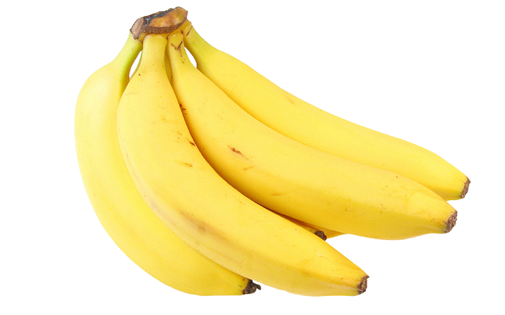

tentangbuah.com
Pisang

Pisang adalah nama umum yang diberikan pada tumbuhan terna berukuran besar dengan daun memanjang dan besar yang tumbuhan
langsung dari bagian tangkai. Batang pisang bersifat lunak karena terbentuk dari lapisan pelepah yang lunak dan panjang
Dalam taksosnomi, pisang termasuk dalam genus Musa dan famili Musaceae. Beragam spesies pisang
tersebar dikawasan MALESIA. Spesie pisang yang paling banyak dibudidayakan didunia adalah pisang hutan. Jenis pisang hutan dapat tumbuh di hutan, bukit,
maupun didataran rendah
Pisang dapat dipanen kapan saja, karena pertumbuhannya yang sesuai dengan segala jenis msim. Kematian pohon pisang hanya terjadi
ketika berbuah hanya sekali semasa hidupnya
Source : Wikipedia.com
Khasiat Pisang
- Melancarkan aliran oksigen ke otak
- Mengatasi anemia
- Meningkatkan sistem kekebalan tubuh
- Menurukan berat badan
- Menurunkan tekanan darah
- Sebagai Mood Food
Daftar Harga
| Jenis Pisang | Harga | |
|---|---|---|
| Per Sisir | Per Biji | |
| Pisang Ambon | 40.000 | 4.000 |
| Pisang Kepok | 30.000 | 3.000 |
| Pisang Raja | 15.000 | 1.500 |
| Pisang Agung | 75.000 | 7.500 |